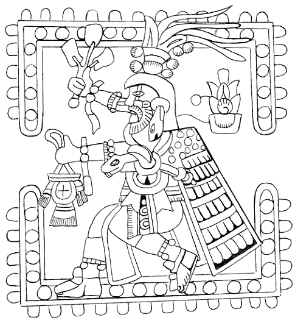

Monday, October the 20th, 2008
back to: title, date or indexes
More evidence—as if it were needed!—of the overlooked rise in Aztec fundamentalism. According to the Guardian, newly released Ministry of Defence files include a document showing that a person was “contacted by aliens” descended from “legendary feathered serpents from ancient Peru“. People, be on your guard!
